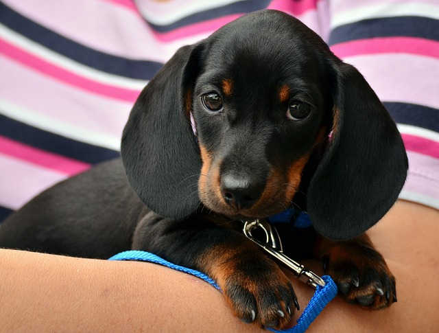
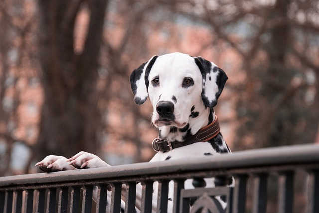
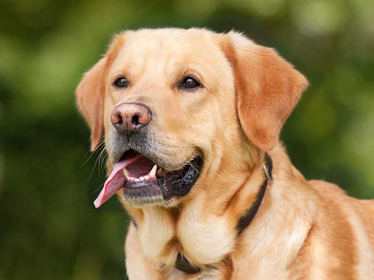
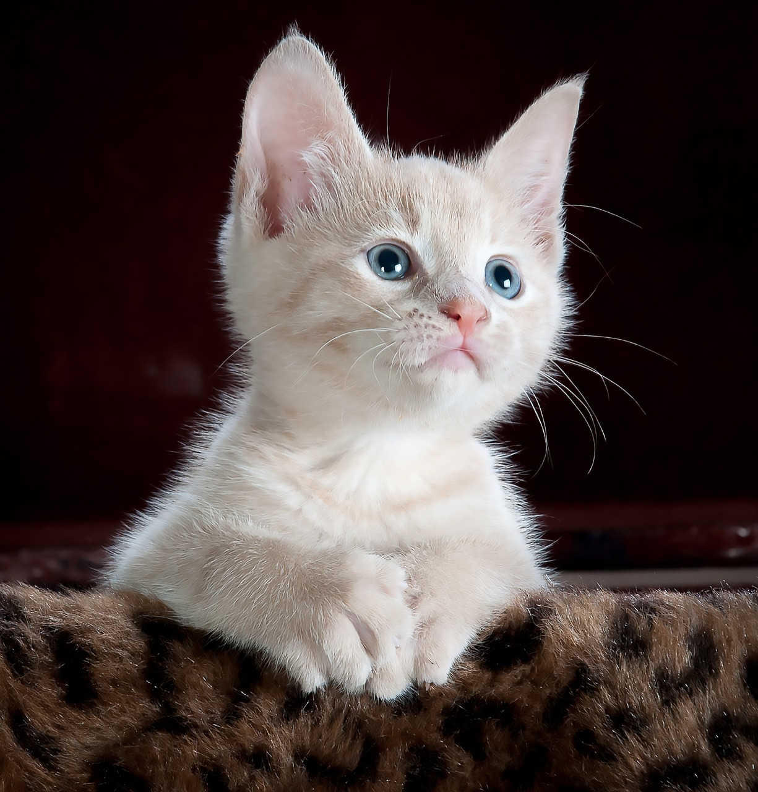
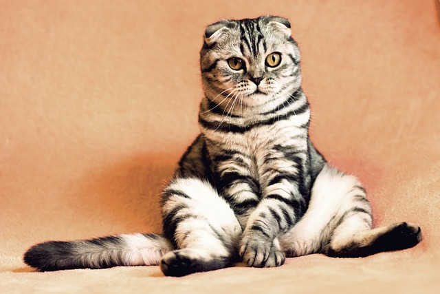
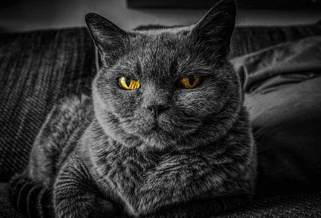

Filtro:
Disponíveis para adoção
Simba
Idade:1 ano
Características: Simba é um cachorro incrível, com um olhar cativante e um coração cheio de alegria. Ele é um companheiro leal, sempre pronto para espalhar amor e diversão.
AdotarBob
Idade:4 anos
Características: Bob é a personificação da tranquilidade e lealdade. Sua presença irradia calma e afeto por onde passa, com uma personalidade carinhosa evidente em cada interação.
AdotarBidu
Idade:2 anos
Características: Bidu é uma explosão de energia e alegria. Com uma pelagem branca salpicada de tons caramelo, ele se destaca por seu entusiasmo contagiante.
AdotarPantera
Idade:2 anos
Características: Pantera é um gato de personalidade enigmática e presença marcante. Sua natureza tranquila e observadora contrasta com a agilidade e determinação ao explorar seu ambiente.
AdotarLogan
Idade:4 meses
Características: Logan, o gato, é uma mistura fascinante de curiosidade e destemor. Seu espírito aventureiro é evidente em cada movimento, sempre pronto para explorar novos cantos e descobrir o desconhecido
AdotarMorpheus
Idade:1 ano
Características: Morpheus, o gato, é enigmático e tranquilo. Sua presença transmite a serenidade antes de um sonho.
Adotar